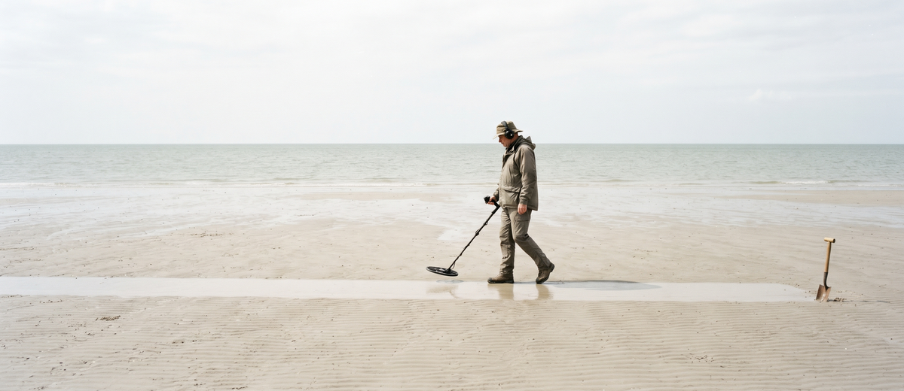

What it does
The tool parses a log file and searches it: a regular expression pattern to hunt for, and three extraction switches that pull out and analyze IP addresses, error codes, and User-Agent strings. Usage, as the README gives it: ./analyze-logs [params]. Its one requirement is pandas>=2.1.0.

Parameters
| Parameter | What the README says |
|---|---|
-h | Show help message and exit |
-p | Regex pattern to search for in the log file |
-o | No description provided |
-l | No description provided |
--ip_address | Extract and analyze IP addresses |
--error_codes | Extract and analyze error codes |
--user_agents | Extract and analyze User-Agent strings |
Stated limits
Two stretches of this beach are unmarked in the source, and they stay unmarked here: -o and -l arrive with no description provided in the source, and the usage line names no log file to parse. Both gaps are left as gaps, with nothing invented to fill them. The licence line at the close of the README is a copyright line only, with no licence named.